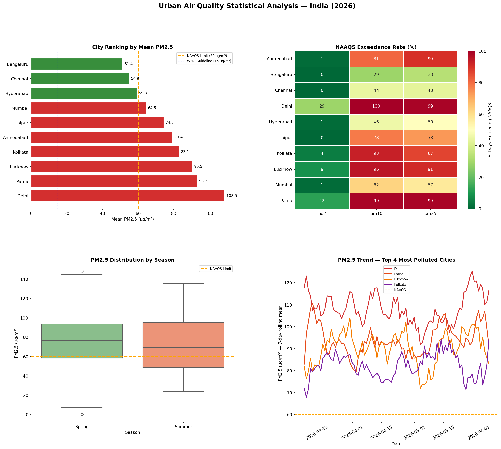
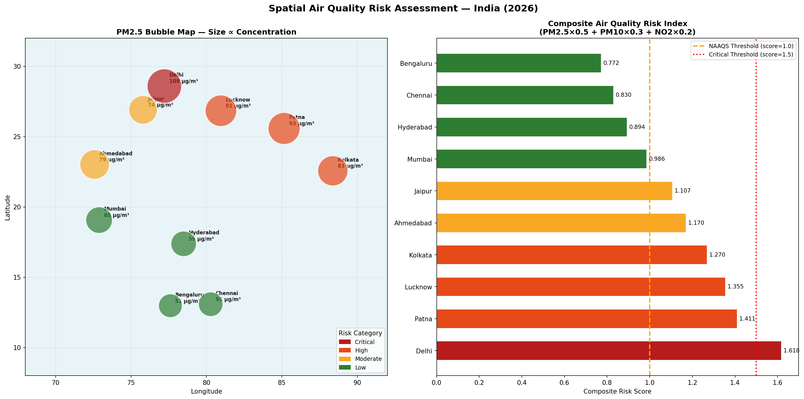

End-to-end analytics pipeline measuring PM2.5, PM10 and NO2 concentrations across 10 major Indian cities - with NAAQS compliance assessment, composite spatial risk mapping, and a live interactive Streamlit dashboard.
Context
India is home to some of the world's most polluted cities. Yet real-time, city-level air quality data remains fragmented — spread across APIs, inconsistently recorded, and rarely analysed in a spatially comparable format. For environmental analysts and emissions consultants, the challenge is not just accessing data but building reproducible pipelines that can ingest, clean, analyse and communicate pollution risk across multiple cities simultaneously.
This project builds that pipeline end-to-end - rom raw API ingestion through QA/QC, statistical analysis, spatial risk scoring and a deployed interactive dashboard.
Methodology
Data Collection OpenAQ API Ingestion
Ingested 90 days of PM2.5, PM10, and NO2 data across 10 Indian cities - Delhi, Mumbai, Kolkata, Chennai, Patna, Bengaluru, Hyderabad, Ahmedabad, Lucknow and Jaipur --border via the OpenAQ API. A synthetic dataset was generated to supplement sparse API returns, incorporating realistic pollution indices and seasonal variation.
Data Cleaning QA/QC Pipeline
Missing value audit, negative value removal and 3×IQR outlier flagging per city-parameter group. NAAQS threshold validation and exceedance rate calculation applied across all records. Output: clean_air_quality_data.csv with full traceability from raw ingestion.
Statistical Analysis Trend & Correlation
Descriptive statistics (mean, median, std, P95, CV%) per city. Linear trend analysis - slope, R², p-value - for each city. Seasonal decomposition and Pearson correlation between PM2.5 and NO2. Key finding: Ahmedabad is the only city with a statistically significant increasing PM2.5 trend (p=0.045).
Spatial Analysis Composite Risk Index
A weighted composite risk index was developed normalising each pollutant against its NAAQS limit. Cities were classified into Critical, High, Moderate and Low risk tiers. Static bubble map (Matplotlib) and interactive choropleth (Folium + Plotly) produced for spatial communication.
Dashboard Streamlit Deployment
A 4-tab interactive Streamlit dashboard with city/pollutant sidebar selector, deployed to Streamlit Community Cloud. Tabs cover spatial risk mapping, time series trends, NAAQS exceedance heatmap and per-city deep dives with pollutant boxplots.
Composite Risk Index Formula
Risk Score = (PM2.5 / 60) × 0.5 + (PM10 / 100) × 0.3 + (NO2 / 80) × 0.2
Key Findings
Delhi PM2.5 (108.5 µg/m³) exceeds the WHO guideline — and 1.8× the NAAQS limit. Delhi PM10 exceeds NAAQS on 100% of analysed days.
Of days Patna's PM2.5 exceeds NAAQS - the second most polluted city in the dataset after Delhi.
Cities exceed NAAQS PM2.5 limits. North Indian cities form a clear high-risk spatial cluster, while southern cities consistently rank cleaner.
Ahmedabad shows a statistically significant increasing PM2.5 trend - the only city in the dataset with a confirmed directional worsening signal.
Bengaluru, Chennai and Hyderabad consistently rank as the lowest-risk cities - a clear north–south pollution gradient visible in spatial outputs.
| City | PM2.5 (µg/m³) | NAAQS Exceedance | Risk Tier |
|---|---|---|---|
| Delhi | 108.5 | 100% of days | Critical |
| Patna | ~95 | 98.9% of days | Critical |
| Lucknow | ~82 | High | High |
| Ahmedabad | ~75 | High + rising trend | High |
| Kolkata | ~70 | Moderate–High | High |
| Mumbai | ~55 | Moderate | Moderate |
| Jaipur | ~52 | Moderate | Moderate |
| Hyderabad | ~38 | Low | Low |
| Chennai | ~33 | Low | Low |
| Bengaluru | ~30 | Low | Low |
Static charts, spatial maps and interactive visualisations from the pipeline.
Figure 1 — Statistical Analysis Overview (4-Panel)

Four-panel summary: city PM2.5 ranking against NAAQS (top left), NAAQS exceedance heatmap across all cities and pollutants (top right), seasonal variation boxplot (bottom left) and time series for the four most polluted cities with 7-day rolling mean (bottom right).
Figure 2 - Spatial Risk Map

Left: bubble map plotting PM2.5 concentration at each city's coordinates - bubble size scaled to concentration, colour coded by risk tier. Right: composite risk index horizontal bar chart ranking all 10 cities. The north-south pollution gradient is clearly visible.
Figure 3 - Interactive Risk Map (Folium)
Interactive Folium map with clickable city popups showing full pollutant breakdown (PM2.5, PM10, NO2), composite risk score and risk tier classification. Heatmap overlay shows pollution intensity across the geography.
Streamlit Dashboard
Tab 01
Spatial Risk Map
Plotly globe view + risk ranking table. Sidebar city and pollutant selector. Visual overview of the national pollution landscape.
Tab 02
Time Series Trends
Daily concentration trends with 7-day rolling mean overlay. Stats table showing slope, R² and p-value per city.
Tab 03
NAAQS Exceedance
Exceedance heatmap across all cities and pollutants. Key findings cards highlighting the worst offenders.
Tab 04
City Deep Dive
Per-city metrics panel with pollutant boxplots, seasonal breakdown and compliance summary for detailed investigation.
Fully deployed on Streamlit Community Cloud - no installation required.
Open DashboardSynthesis
Delhi, Patna and Lucknow form a high-risk spatial cluster where PM2.5 exceeds NAAQS on nearly every day of the year. The density of industry, transport, crop burning and urban heat creates a pollution feedback loop that seasonal variation alone cannot explain.
Unlike other high-pollution cities, Ahmedabad is the only city showing a statistically significant upward PM2.5 trend (p=0.045). This is a leading indicator - a city that may transition from high to critical risk if industrial expansion and urbanisation continue without corresponding regulation.
Bengaluru, Chennai and Hyderabad consistently maintain lower pollution levels despite rapid urban growth. Their coastal geography, topography and comparatively stronger local environmental governance offer a partial model for what is achievable in more vulnerable cities.
Tools & Stack